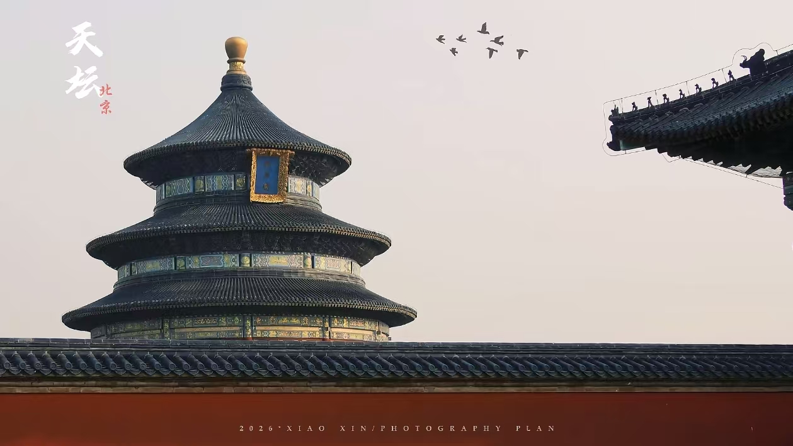

天坛公园位于北京市南部，是明清两代帝王祭祀皇天、祈五谷丰登的场所，是中国现存最大的古代祭祀性建筑群，1998年被列为世界文化遗产。
天坛始建于明永乐十八年（1420年），占地面积约273万平方米，主要建筑有祈年殿、皇穹宇、圜丘坛等。祈年殿是天坛的标志性建筑，为三重檐圆形大殿，蓝色琉璃瓦顶，高38米，直径32米，全靠28根楠木大柱支撑，建筑设计十分精妙。
天坛以严谨的建筑布局、奇特的建筑构造和瑰丽的建筑装饰著称于世，处处体现着中国古代的"天圆地方"、"天人合一"的哲学思想。著名的回音壁、三音石更是展示了中国古代建筑声学的高超水平。
门票：旺季15元/人（联票34元），淡季10元/人（联票28元）
开放时间：6:00-22:00（公园），8:00-17:30（景点）
交通：地铁5号线天坛东门站